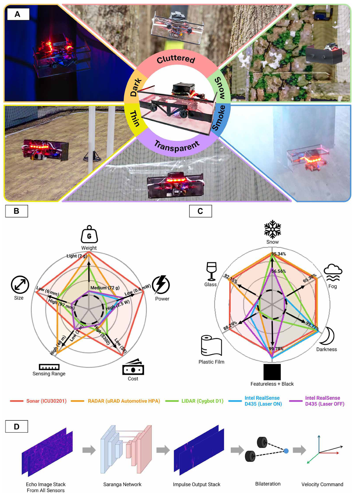
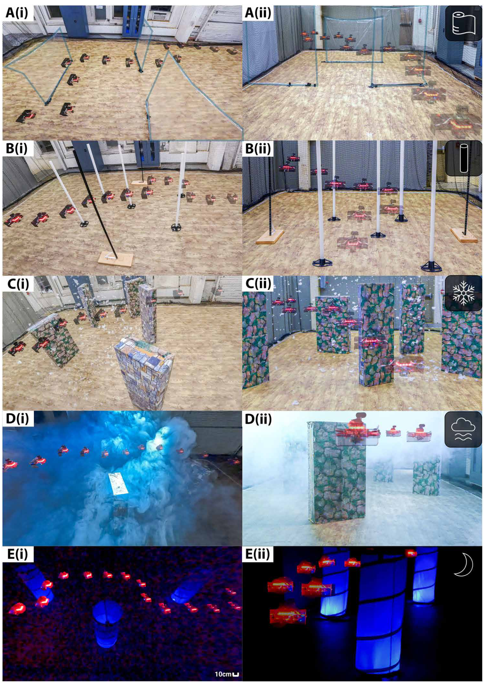
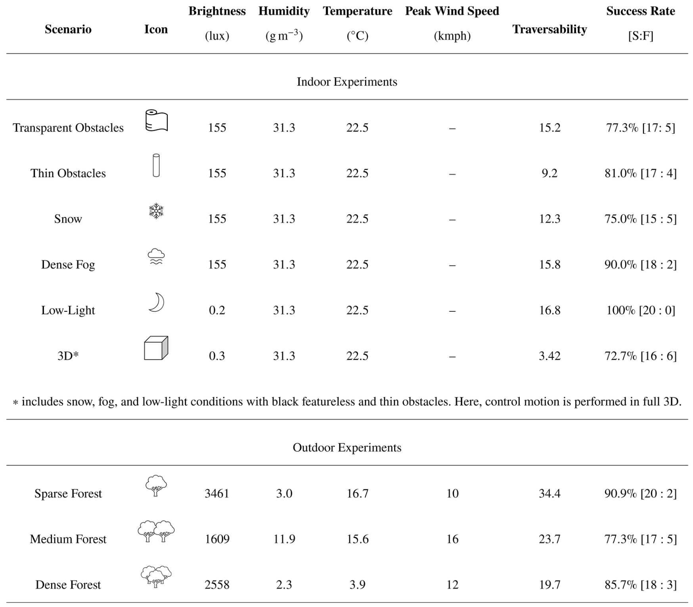
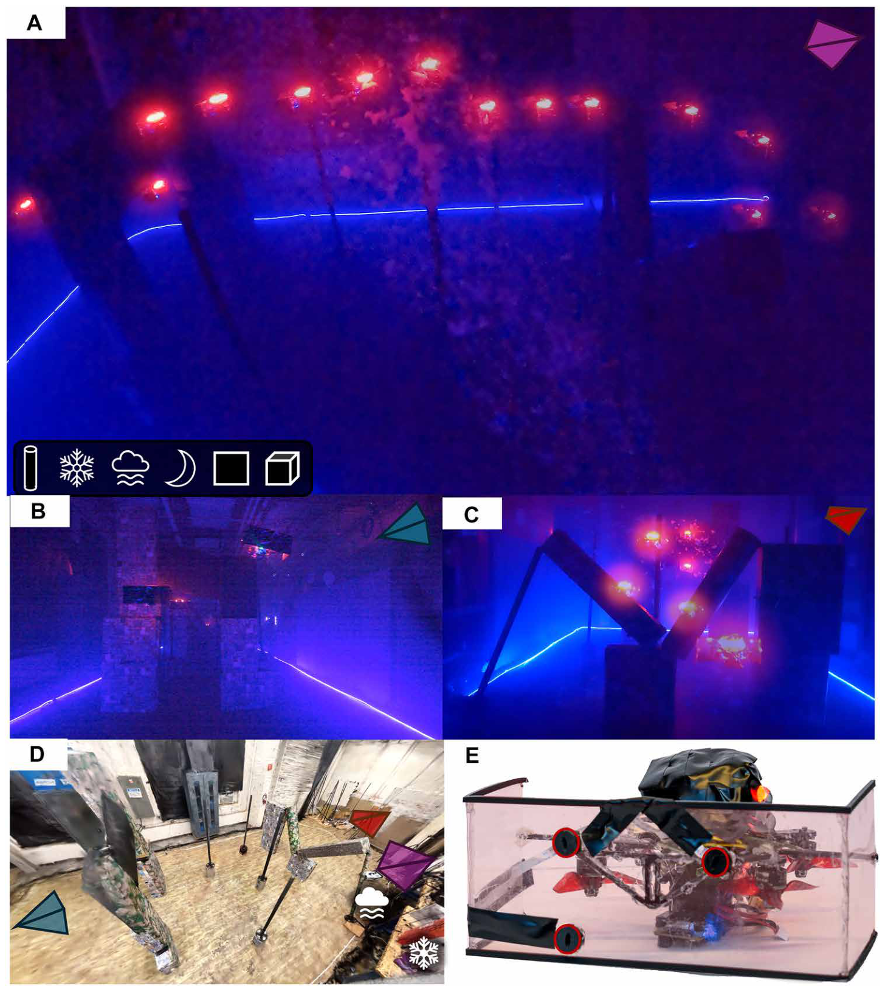
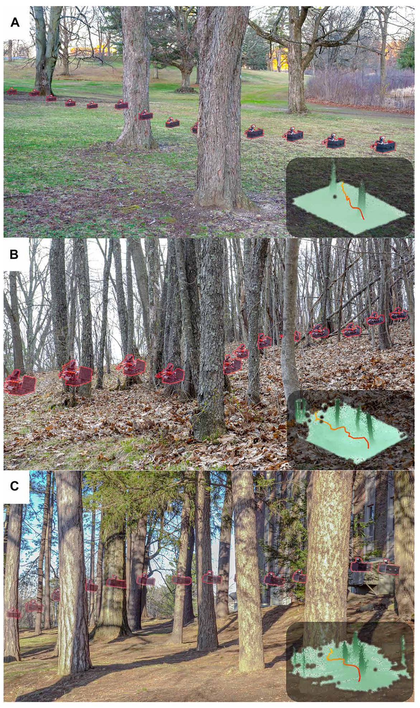
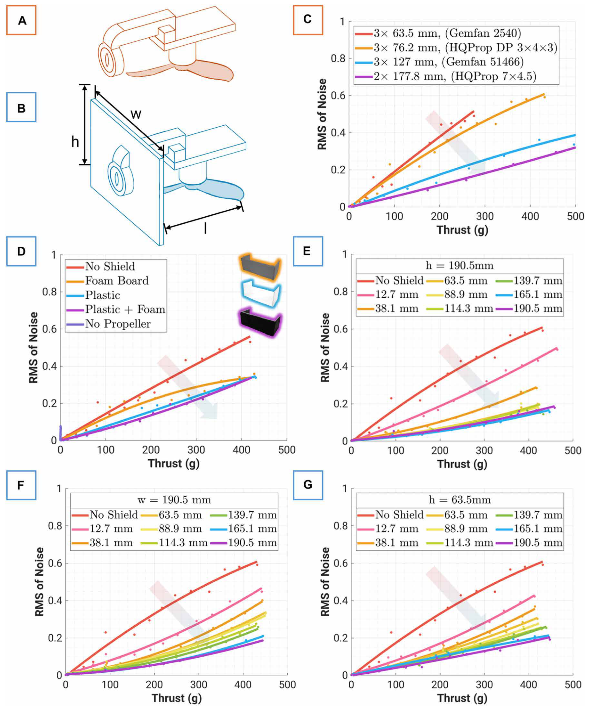
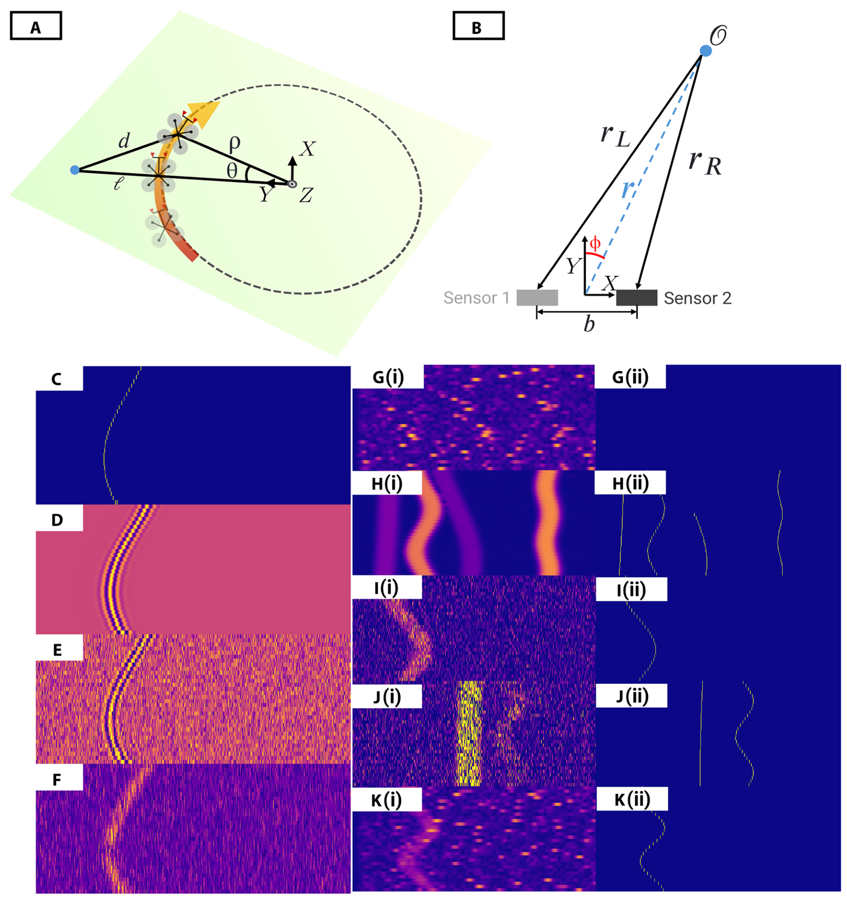
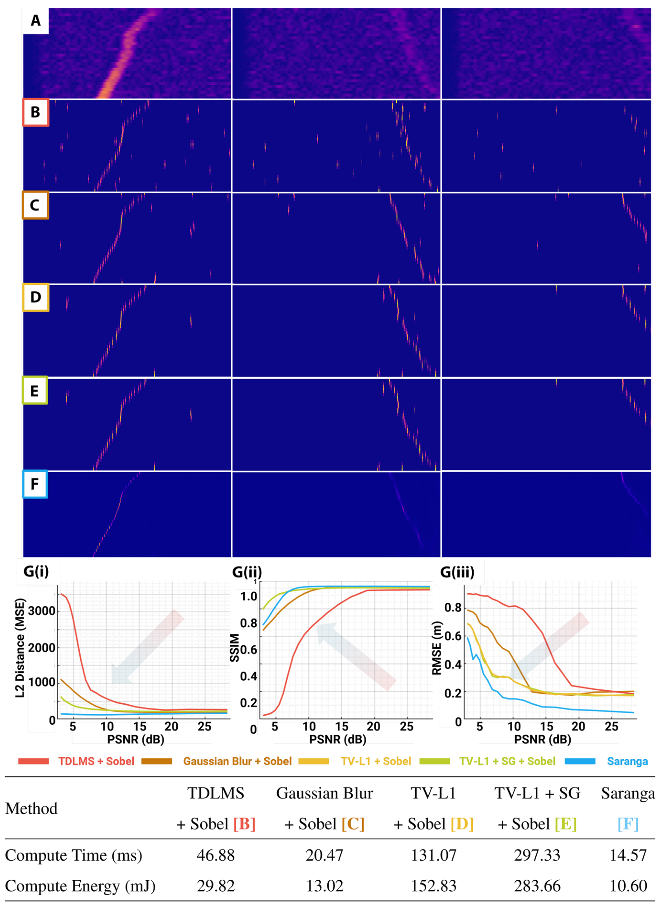

图 01
为什么要让小无人机改用声波避障
先建立任务与系统全貌：超声穿过视觉遮蔽，回波恢复算法把低信息量传感器接到避障控制。

Saranga 将微弱超声回波排成时间图像，用物理挡板降低桨噪声，再用神经网络恢复障碍回波前沿。掌上四旋翼因此能在人工雾雪、低照度和树林中自主绕障；它的价值是低功耗感知的系统可行性，仍有短量程与碰撞失败的边界。
阅读依据：用户提供的正式出版 PDF，19 页正文、方法与参考文献，另附 1 页出版信息。本页完整导读主文 8 张图，并核对统计与方法；尚未读取独立补充材料、观看全部视频或运行代码。图为 PDF 4 倍渲染的完整图体，原始 PDF 保留本地。作者结论、实测条件与本页推算/迁移判断分别标明。
困难并非超声能否测距，而是掌上四旋翼的螺旋桨会产生强烈超声干扰，厘米级杆体和树木的弱回波容易被淹没。作者把硬件降噪、时序表示、合成训练、显式几何和反应式控制接成闭环，展示无需外部定位基础设施的障碍规避。
53 kHz 发射与双路接收 → 32 帧回波包络 → UNet 恢复前沿 → 跨通道匹配 → 距离/方向 → 最近障碍反应式绕行
一帧内的时间表示声波往返所需时间，从而给出距离；帧与帧之间的时间表示机器人移动过程中距离如何变化。把两种时间分别放在列和行，真实障碍形成连续曲线，时间上不相关的噪声更难形成同样稳定的结构。0.82 s 是滚动历史长度，不能直接当作控制延迟；网络推理 14.57 ms，也不能替代整个系统的端到端延迟测量。
左路总路径 pL = 2rL；右路总路径 pR = rL + rR
Δp = pL − pR = rL − rR；仅保留 |Δp| ≤ b 的配对
远场近似：φ ≈ arcsin(Δp / b)，距离 r ≈ pL / 2
左传感器发射，两侧都接收，所以右路是“左发射→障碍→右接收”的双基地路径。不能把左右两路都直接除以 2 后再相减来估计角度。本页按物理传播关系整理上述解释，符号对应 Methods，pp.15–16。候选匹配来自所有前沿组合，按基线约束筛选并取角度中位数；密集多目标仍可能产生错误对应。
网络采用 4 层编码器和 4 层解码器的 UNet，40,000 对合成图训练 100 epochs，batch 128、Adam、学习率 2×10⁻⁴、MSE 损失，量化后在 Edge TPU 上推理。后续控制只用最近检测障碍，前向减速、侧向/垂直排斥，加入滞回避免左右反复切换；不建局部地图、不主动控制偏航，也未集成全局目标路径规划。
先建立任务与系统全貌：超声穿过视觉遮蔽，回波恢复算法把低信息量传感器接到避障控制。

图像展示确实发生的飞行；每一组都需和图 3 的试验分母配对。

这是主文的结果账本：一行一个任务条件，成功率之外还给出光照、温湿度、风速和可通行度。

在混合遮蔽环境中，机器人需要上下与左右同时避让，不能再只估计水平角。

真实树皮、枝条与风增加了合成数据未精确建模的困难。

用推进器试验台把传感器噪声、推力、桨尺寸和挡板参数拆开测量。

模拟提供真实飞行中难以逐像素标注的标签；少量真实回波与噪声补足传感器差异。

上半图是实际细杆数据的定性结果；下半图的误差曲线来自合成实验，两种证据不能混报。

| 数字 / 表述 | 对应的实验与口径 | 不能推成什么 |
|---|---|---|
| −4.9 dB PSNR | 直径 60 mm PVC 杆，正前方 1 m，产生约 0.46 kg 悬停推力的桨噪声条件，p.7。 | 不是所有真实飞行时刻的信噪比，也不是去噪后的 PSNR。 |
| 1.66 m | N=512 对应设定的回波采样范围，p.4；作者另报告最大可探测条件。 | 不是任意材质、角度、厘米细杆都稳定可检测到的距离。 |
| 最高 2 m/s | 专门采用稀疏障碍场地加速；1、1.5、2 m/s 时成功率为 100%、81.82%、72.73%，p.7。 | 不是所有雾雪、密林与 3D 场景的运行速度，也不是零碰撞高速导航。 |
| 10.60 mJ / 14.57 ms | 单次推理相对空闲状态的增量能量与平均耗时，图 8、p.17。 | 不是 1.2 mW 感知的组成项，也不是整个 Coral 主板或自主系统总功耗。 |
| 20/20 低照度成功 | 0.2 lux、三个较大游戏隧道、特定布局与调参，pp.6–7。 | 不是无限次可靠性、任意黑暗条件或所有视觉组件都不参与飞行。 |
功耗推算：10.6 mJ ÷ 14.57 ms ≈ 0.73 W，为该推理区间相对空闲的平均增量功率。整机悬停超过 100 W（p.13），作者明确承认当前原型的传感节能对续航收益有限；不能把毫瓦传感直接包装成毫瓦级飞行。
复合场景两种成功口径：p.6 报告 16/23（69.57%）；p.7 对照段写 Saranga 13 次完成、3 次撞围网、7 次撞障碍，总数同为 23。数字关系与“是否把撞围网计为成功”相容，但主文没有明确解释这两段口径为何不同，不能替作者确认。BatDeck 为 1/17 完成、5 次撞障碍、11 次撞围网。严谨比较应使用一致的撞网计分，并核对补充图 S2 与原始试验表。
对照与样本边界：BatDeck 是作者在本平台复现的方案，使用 45° 声学喇叭近似原方案 55° 视场；Saranga 使用更宽视场、双通道与不同控制策略，所以差异不是纯神经网络增益。每组约 20 次且部分连续使用同一电池，正文未给成功率区间；20/20 也不足以证明普遍可靠。传感器比较在固定 1 m 做静态测量，去噪定位曲线来自合成单点目标，均不能与真实闭环成功率混为同一指标。
模型与公式需源码核对：原文同时报告 1.24 M 参数与 0.5 MB 量化编译模型；仅按每参数 1 字节粗算约 1.24 MB，大小口径需检查实际权重/编译文件才能解释。训练部分将噪声选择参数描述为“二值”又写连续均匀分布，回波采样公式的频率符号也值得核对。若 fₛ 是采样频率，物理上样本索引应为 ⌊2dfₛ/c⌋；本页不把排版符号直接当作可运行实现。
来源范围：当前文件没有独立补充 Methods、S1–S3、Algorithms 1–2 或参数表 S1；因此不臆造传感器基线、阈值、控制增益、训练/测试划分及全部固件细节。作者公开声明的入口：项目页、Dryad 数据、代码与模型；本次未下载运行，开放声明不等于已经完成复现。
以下为本页迁移判断。最值得借鉴的是先测噪声、再选表示、最后闭环验证。可将多帧波形排成时间—距离/到达时差图，用连续性提高脉冲或路径检测稳定性，同时保留到达时间的物理含义。
扑翼振动可能高度周期相关，不能直接继承本文“噪声在时间上不相关”的前提。应先分析翼拍相位、转速或姿态与干扰的关联，再决定使用相位条件模型、周期抑制或时序恢复。
本文双接收器共享发射源的路径差，与多基站 RF-TDOA 的传播路径、时钟同步和基线尺度不同。可借鉴候选对应约束，不能直接照搬超声回波的 1/2 路程关系或包络阈值。
这篇 Science Robotics 解决了一个很具体的问题：掌上四旋翼在雾、低照度和透明障碍前，视觉容易失效，而低功耗超声又会被自己的螺旋桨噪声淹没。作者没有单独依赖一个更强的算法，而是先用物理挡板降噪，再把连续 32 次回波变成一幅历史图，让网络从时间连续性中恢复障碍前沿。
训练标签来自模拟距离轨迹，输入则加入三类物体的实测回波形状和约两分钟的真实飞行噪声。网络之后仍使用明确的几何：左边发射，两边接收，根据路径差估计障碍方向，再让简单控制器避开最近障碍。普通场景用两个前向传感器，三维绕障增加第三个。
证据从挡板消融、去噪与定位比较，一直连到室内和森林重复飞行。浓雾为 18/20 成功，低照度为 20/20，三维混合场景为 16/22，森林约 77%–91%。这些说明方案可行，但还不是可靠搜救系统：薄弱回波有时直到 40 cm 内才被发现，无地图反应式绕行也可能撞到另一侧障碍。最后必须限定毫瓦这个数字：1.2 mW 是双超声感知，当前整机悬停超过 100 W。真正可借鉴的是物理设计、任务表示和闭环证据一起建立的方法。